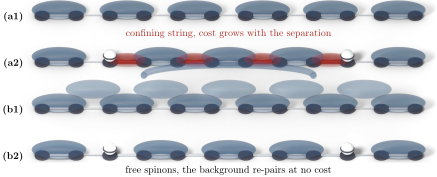
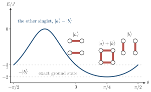

Page 5 of 11 of this session
8.6 The resonating valence bond wavefunction as the QSL ground state
How do we write a ground state in which the singlets are not frozen into one covering? We will now see a variational answer that borrows the BCS state of a superconductor. We take a BCS state of auxiliary fermions and keep only its configurations with one fermion per site. What remains is the resonating valence bond state (8.7), a superposition over all the ways to pair the sites into singlets.
\[H_{\text{MF}} = -t\sum_{n\sigma}\left(c_{n\sigma}^\dagger c_{n+1,\sigma}+\text{h.c.}\right) - \mu\sum_{n\sigma}c_{n\sigma}^\dagger c_{n\sigma} + \sum_n\left(\Delta_n\, c_{n\uparrow}^\dagger c_{n\downarrow}^\dagger + \Delta_n^*\, c_{n\downarrow}c_{n\uparrow}\right) - \sum_n\frac{|\Delta_n|^2}{U}. \tag{5.4}\]
This is the mean-field Hamiltonian of the attractive chain of Section 5.5, with the hopping \(t\), the chemical potential \(\mu\) and the pair amplitude \(\Delta_n\) on each site \(n\). Its pairing term creates an \(\uparrow\) and a \(\downarrow\) electron on the same site, and for a uniform \(\Delta_n=\Delta\) its ground state is a BCS state. In this section we use the same kind of state for auxiliary fermions \(f_{i\sigma}\) instead of the electrons \(c_{n\sigma}\).
For a frustrated Heisenberg Hamiltonian \(\mathcal H = \sum_{ij} J_{ij}\, \mathbf S_i\cdot\mathbf S_j\), we do not expect the ground state to be one fixed dimer covering as in (8.5). Instead, we expect a linear combination of singlets over every possible pairing of sites, where each pairing has its own amplitude, which is a complicated many-body wavefunction. We could try to treat this directly, for example by writing it as a tensor network, as in Section 7.4 for the general strongly correlated case. There is, however, a way that is easier to understand physically, which is a variational ansatz based on an analogy with superconductivity.
The idea is that the singlets in a QSL are similar to the Cooper pairs in an s-wave superconductor, since both are singlet correlations between pairs. A BCS-type wavefunction is easy to write at the mean-field level in the right basis, which is the Nambu space of Section 5.8. So we start from a BCS-paired state built from the same auxiliary fermions \(f_{i\sigma}\) that we will justify in detail in Section 8.8,
\[|\Psi_\text{BCS}\rangle = \prod_{\mathbf k}\Big(u_{\mathbf k} + v_{\mathbf k}\, f^\dagger_{\mathbf k\uparrow} f^\dagger_{-\mathbf k\downarrow}\Big)|0\rangle, \tag{8.6}\]
where \(u_{\mathbf k}, v_{\mathbf k}\) are variational parameters, the coherence factors of a BCS state. This is the ground state of the mean-field pairing Hamiltonian of Section 5.5, and the Bogoliubov-de Gennes Hamiltonian of Section 5.8 gives the same factors as its eigenvectors. By itself, (8.6) is a superposition of states with every possible number of fermions per site, which can be empty, singly occupied or doubly occupied. This is not a physical spin state at all. A QSL has strong local interactions, so we need single occupation on every site, and no charge fluctuations between sites are allowed. We impose this condition with a Gutzwiller projector onto the singly-occupied subspace.
The BCS state (8.6), projected onto one fermion per site, is
\[|\Psi_\text{RVB}\rangle = P_G\,|\Psi_\text{BCS}\rangle, \qquad P_G = \prod_i n_i(2-n_i), \qquad n_i = \sum_\sigma f^\dagger_{i\sigma}f_{i\sigma}, \tag{8.7}\]
where \(P_G\) gives \(1\) for states with exactly one fermion per site and \(0\) for all other states. The result is a spin state, a superposition over all the ways to pair the sites into singlets.
What remains is a real many-body spin wavefunction. It is a superposition over the different ways to pair sites into singlets, in the same spirit as the singlet of a single dimer (8.3), but now over a whole frustrated lattice. The name of this construction describes what it is, and it is called the resonating valence bond (RVB) variational wavefunction. It turns out to be a good description of the physics of quantum spin liquids. Figure 8.3 shows what makes this resonating state, and the excitations that it has, different from the frozen dimer covering of Section 8.5.

The smallest example of a resonance is a plaquette of four sites, and Schematic 8.5 shows that the resonance between its two coverings lowers the energy.

The steps Why resonance lowers the energy of a plaquette
Let us take the four sites \(0,1,2,3\) around the square, with \(J\) on the four bonds \((01)\), \((12)\), \((23)\) and \((30)\). We write \((ij)\) for the singlet \((|{\uparrow_i\downarrow_j}\rangle-|{\downarrow_i\uparrow_j}\rangle)/\sqrt2\), in the order of its pair. The simplest state is one covering, \(|a\rangle=(01)(23)\). Its two singlet bonds give \(-3J/4\) each. A bond between two different singlets, such as \((12)\), gives \(\langle\mathbf S_1\rangle\cdot\langle\mathbf S_2\rangle=0\), since the two singlets are independent. So
\[\langle a|H|a\rangle=-\tfrac32J,\]
and the same holds for the other covering \(|b\rangle=(12)(30)\).
The exact ground state comes from the two sublattices \(A=\{0,2\}\) and \(B=\{1,3\}\). Each site of \(A\) is bonded to both sites of \(B\), so with \(\mathbf S_A=\mathbf S_0+\mathbf S_2\) and \(\mathbf S_B=\mathbf S_1+\mathbf S_3\),
\[H=J\,\mathbf S_A\cdot\mathbf S_B=\frac J2\big(\mathbf S^2-\mathbf S_A^2-\mathbf S_B^2\big).\]
Each of \(S_A\) and \(S_B\) is \(0\) or \(1\). The lowest level has \(S_A=S_B=1\) and the total spin \(S=0\), at \(\frac J2(0-2-2)=-2J\). This is below \(-\tfrac32J\), so one covering is not the ground state.
Both coverings have \(S=0\), and four spins one half have only two states with \(S=0\). So the two coverings span this sector, and the ground state is a combination of them. The other level of the sector has \(S_A=S_B=0\), which is the product of the singlets \((02)(13)\) on the diagonals, at the energy \(0\). With the order of the pairs above, \(\langle a|b\rangle=+\tfrac12\), the ground state at \(-2J\) is \(|a\rangle+|b\rangle\) and the level at \(0\) is \(|a\rangle-|b\rangle\). If we write \(|b\rangle\) as \((12)(03)\) instead, the overlap is \(-\tfrac12\) and the two combinations exchange their roles. So the sign of the resonance depends on how we write the pairs, and the energies do not.
We start from a BCS state of auxiliary fermions,
\[|\Psi_\text{BCS}\rangle = \prod_{\mathbf k}\Big(u_{\mathbf k} + v_{\mathbf k}\,f^\dagger_{\mathbf k\uparrow} f^\dagger_{-\mathbf k\downarrow}\Big)|0\rangle.\]
Why do we apply the Gutzwiller projector \(P_G\) to it?
Show the answers
- A. ✗ False
This is false. The singlet pairing \(\Delta(f^\dagger_\uparrow f^\dagger_\downarrow-f^\dagger_\downarrow f^\dagger_\uparrow)\) has total spin zero, and it is invariant under spin rotations. The projector is not needed for this.
- B. ✓ True
This is true. In this BCS state the number of fermions on a site fluctuates between zero and two. Projecting onto single occupancy leaves only the spin degrees of freedom.

Figure 8.4, shown again. Look at the two crossed states, the empty and the doubly occupied one. - C. ✗ False
This is false. With exactly one fermion on each site the charge cannot move or fluctuate, so the projected state is a Mott insulator. The projection removes the charge degrees of freedom.
We separate the two spinons that come from breaking a singlet. In which state does the energy cost grow with the separation?
Show the answers
- A. ✓ True
This is true. In the frozen covering the broken singlets between the spinons form a string, and the spinons are confined into a triplon. In the RVB state the background pairs again, so the spinons separate freely.
- B. ✗ False
This is false. The RVB state is a superposition of many coverings, so no pattern is frozen. Moving a spinon by two sites only re-pairs the singlets along its path and leaves no string behind.
- C. ✗ False
This is false. In a dimerized chain a spinon pair at distance \(d\) leaves about \(d/2\) broken singlets and costs an energy proportional to \(d\). In the RVB state the cost does not depend on \(d\).
On one site the number of fermions \(n=n_\uparrow+n_\downarrow\) is \(0\), \(1\) or \(2\). Which operator keeps only the states with one fermion?
Show the answers
- A. ✗ False
This is false. It gives \(0\) for \(n=0\) and for \(n=1\), and \(1\) for \(n=2\). So it keeps the doubly occupied site and removes the two spin states.
- B. ✗ False
This is false. It gives \(1\) for the empty site, \(0\) for \(n=1\) and \(-1\) for \(n=2\). It removes the spin states, and with the value \(-1\) it is not even a projector.
- C. ✓ True
This is true. It gives \(0\cdot2=0\) for \(n=0\), \(1\cdot1=1\) for \(n=1\) and \(2\cdot0=0\) for \(n=2\). It is the factor of each site in the Gutzwiller projector \(P_G\).
One site has four states, \(|0\rangle\), \(|{\uparrow}\rangle\), \(|{\downarrow}\rangle\) and \(|{\uparrow\downarrow}\rangle\). Compute \(n(2-n)\) on each of them, with \(n=n_\uparrow+n_\downarrow\), and show that it is a projector, \(\big(n(2-n)\big)^2=n(2-n)\). Then count how many of the \(4^4=256\) states of four sites survive the projector \(P_G=\prod_i n_i(2-n_i)\).
Solution
The four states are eigenstates of \(n\), with \(n=0\) for \(|0\rangle\), \(n=1\) for \(|{\uparrow}\rangle\) and \(|{\downarrow}\rangle\), and \(n=2\) for \(|{\uparrow\downarrow}\rangle\). So \(n(2-n)\) is diagonal in this basis, with the values
\[0\cdot2=0, \qquad 1\cdot1=1, \qquad 1\cdot1=1, \qquad 2\cdot0=0.\]
Each value is \(0\) or \(1\), and \(0^2=0\) and \(1^2=1\), so \(\big(n(2-n)\big)^2=n(2-n)\), and the operator is the projector onto the two singly occupied states. The operators \(n_i\) of different sites commute, so \(P_G\) is a product of commuting projectors, and it is a projector too. A state of four sites survives when every site has one fermion, with two choices, \(\uparrow\) or \(\downarrow\), on each site. So \(2^4=16\) of the \(4^4=256\) states survive, and they are the \(16\) states of four spins one half.
On \(N\) sites the fraction that survives is \(2^N/4^N=2^{-N}\), so the projector removes almost all of the Fock space of the fermions. For a calculation this means that the projected state lives in a space of \(2^N\) states, the size of a spin problem, while the BCS state before the projection lives in \(4^N\) states.
Try it. Run the chain with a local field on site 0 and look at the magnetization along the chain. It should alternate in sign from site to site and decay slowly, as in a critical state. Compare with the dimerized chain of the previous section.
- In Section 8.8 the auxiliary fermions \(f_{i\sigma}\) of (8.6) are justified as Abrikosov fermions, and the single-occupancy constraint is the operator form of \(P_G\).
- In Section 8.9 the mean-field spinon Hamiltonian with real hoppings keeps the state time-reversal symmetric, as the RVB state is.
- In Section 9.9 a ground state similar to a spin liquid responds to a local magnetic impurity.